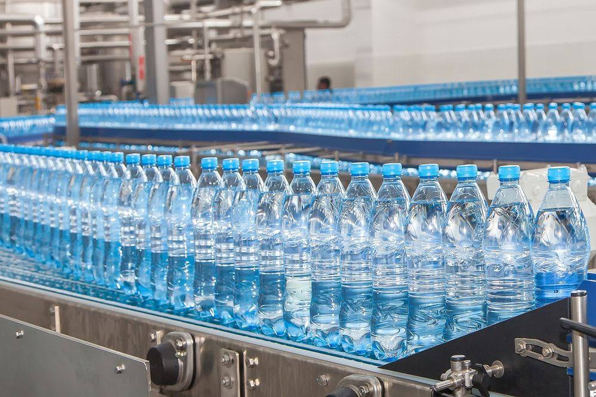

About CrystalPure
Delivering clean, safe drinking water for homes and businesses.
CrystalPure Bottled Water Ltd. is a modern water purification and bottling company dedicated to delivering safe and healthy drinking water to homes and businesses.
Our water goes through multiple purification stages, including:
- Sediment filtration
- Carbon filtration
- Reverse osmosis purification
- UV sterilization
- Ozonation for final disinfection
This process ensures that every bottle meets international drinking water standards.

CrystalPure Bottled Water Ltd. is dedicated to providing clean, safe, and refreshing drinking water for homes, offices, and businesses. Our water goes through a carefully monitored purification process using modern filtration and sterilization technology to ensure every bottle meets the highest standards of quality and hygiene.
We believe that access to pure drinking water is essential for a healthy lifestyle. That is why we focus on maintaining strict quality control at every stage of production — from water sourcing to bottling and distribution.
At CrystalPure Bottled Water Ltd. our goal is simple: to deliver reliable, great-tasting water that keeps you hydrated and supports your well-being every day.
Our Mission
Our mission is to provide clean, safe, and refreshing drinking water that meets the highest quality and safety standards. We are committed to promoting healthy hydration while using environmentally responsible production processes.
Our Vision
To become one of the most trusted bottled water brands in the region by delivering consistent quality, excellent customer service, and sustainable production practices.
Our Goals
Advanced Technology
Using modern filtration systems for pure drinking water.
Strict Quality Control
Maintaining high hygiene standards during production.
Wide Distribution
Supplying water to homes, schools, hospitals and offices.
Healthy Hydration
Promoting daily water intake for healthier living.